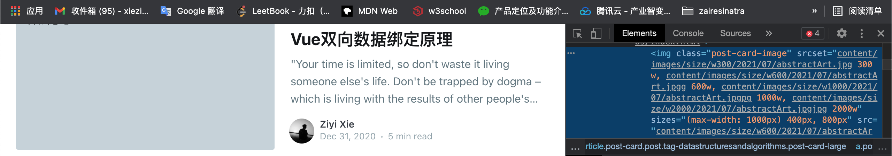

🥷🏻Ghost&Github Config
Vim ninjas count every keystroke!

GitPage 上的 Jekyll 与 Ghost 仍在稳定运行，由于科学上网的原因，可能存在访问上的痛点。考虑到云服务器往后迁移的问题，故记录备份与配置的过程。
快速上手
Ghost
虽在服务器端搭建出来的 Ghost 属于动态博客，但也可通过编译配置生成 Hexo、Jekyll 这类静态博客页面。Wordpress 相较于并发能力更强的 Ghost 还是稍逊风骚。
配置过程
- 版本依赖
MacM1: BigSur 11.4
Ghost-CLI version: 1.17.3
Node -v: v14.17.1
Ghost Local: 4.8.4
Ubuntu: version:18.04
Nginx: version:1.14.0
MySQL: version:5.7.27
Node.js: version:10.24.0
Ghost-CLI: version: 1.16.0
Ghost: version:3.0.2
- 安装 Ghost-CLI
sudo npm install -g ghost-cli@latest
- 在自定义空文件夹安装 Ghost
$ ghost install local
✔ Checking system Node.js version - found v14.17.1
✔ Checking current folder permissions
...
✔ Starting Ghost
...
yourdomain.com/ghost/
后续的 ghost start|stop 须在该安装 Ghost 的文件夹目录下执行，否则会出现 Working directory is not a recognisable Ghost installation. 的错误。
编译静态页面
- 点此下载shellScript，用于将 Local Ghost 编译成静态页面
- 下载完毕后将 gui.sh 文件保存在本地 Ghost 网站的根目录中
- 修改该文件中
# Define urls and https部分
# Define urls and https
from_url=yourdomain.com # change this if your local ghost url is different
to_url=yourdomain.com # change it to your real domain name (no add https)
to_https=true # set true to enable HTTPS (e.g. GitHub Pages)
- 增加 shellScript 权限
chmod +x gui.sh
- 运行脚本，生成静态文件目录
./gui.sh or source gui.sh or sh gui.sh
- 将 static 目录上传 Github Page 即可
Prism.js
Bugs 解决
- 由于 src 的路径后缀错误而导致插图显示失败

因默认自动编译生成的是动态网站，而实际需编译成静态网站时，应当修改默认文件中的相关配置。将所有的 .hbs 文件中的格式选型代码进行指定删减。
{{#if feature_image}}
<figure class="article-image">
{{!-- This is a responsive image, it loads different sizes depending on device
https://medium.freecodecamp.org/a-guide-to-responsive-images-with-ready-to-use-templates-c400bd65c433 --}}
<img
srcset="{{img_url feature_image size="xl"}} 2000w"
sizes="(min-width: 1400px) 1400px, 92vw"
src="{{img_url feature_image size="xl"}}"
alt="{{title}}"
/>
</figure>
{{/if}}
- 子域名在到期后续费，提示需要域名身份验证
由于这个子域名从属是位于另外的账户，那么在进行 DNS 域名解析时应该在一级域名所在账户中添加解析。
结束
本博客所有文章除特别声明外，均采用 CC BY-SA 4.0 协议 ，转载请注明出处！